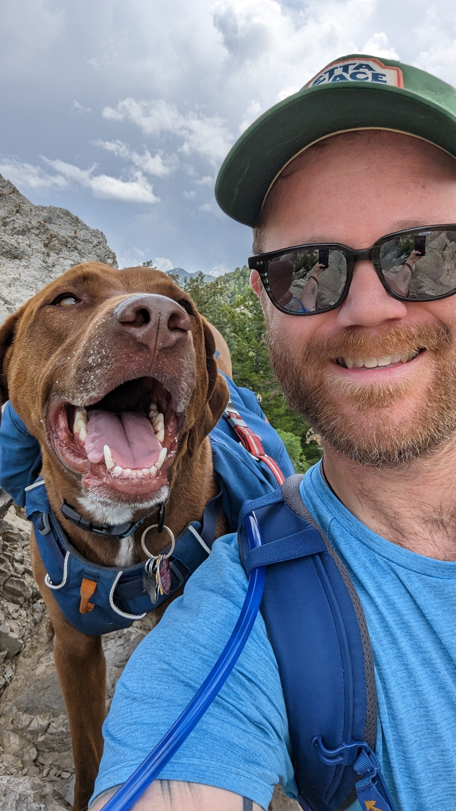

Carl E. Hjelmen, Ph.D.
Evolutionary Biologist | Assistant Professor of Bioinformatics & Genomics
I grew up in small-town South Dakota with a passion for learning. I attended Augustana College (now Augustana University) where I received a Bachelor of Arts in Biology and played upright bass in the symphony orchestra. Partway through my undergraduate program I discovered research, starting as an undergraduate researcher and then pursuing an NSF REU position in the Department of Entomology at Texas A&M University. It was there I met my PhD advisor, Dr. J. Spencer Johnston, and began to understand what could be accomplished with basic scientific research investigating broad evolutionary questions.
During my PhD, I focused on genome size evolution in Drosophila species, utilizing the long history of research on this group and comparative phylogenetic methods. One of the most rewarding aspects of this work has been incorporating undergraduate researchers in data collection, analysis, and manuscript preparation — experiences I know are transformative, having benefited greatly from research opportunities as an undergraduate myself.
After my PhD, I held two postdoctoral positions that greatly expanded my bioinformatic skills. With Dr. Aaron Tarone, I investigated miRNA and protein markers of immature development in forensically relevant flies. With Dr. Heath Blackmon, I continued studying genome size evolution in insects and contributed to whole-genome sequencing projects. I'm proud to still collaborate with my PhD advisor and both postdoctoral advisors on projects involving undergraduate researchers.
Education & Experience
Assistant Professor of Bioinformatics and Genomics
Postdoctoral Research Associate
Advised by Heath Blackmon
Postdoctoral Research Associate
Advised by Aaron Tarone
Ph.D. in Entomology
Advised by J. Spencer Johnston
Outside the Lab
When I'm not in the lab or classroom, I try to fill my time with:
- Playing music — classically trained bassist, self-taught guitarist
- Listening to music — classical and hard rock
- Woodworking
- Hiking
- Hanging out with my dog Guinness
Check out my Instagram for more!
